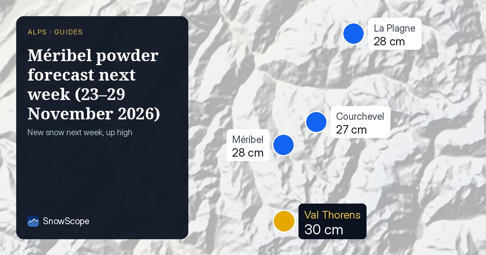
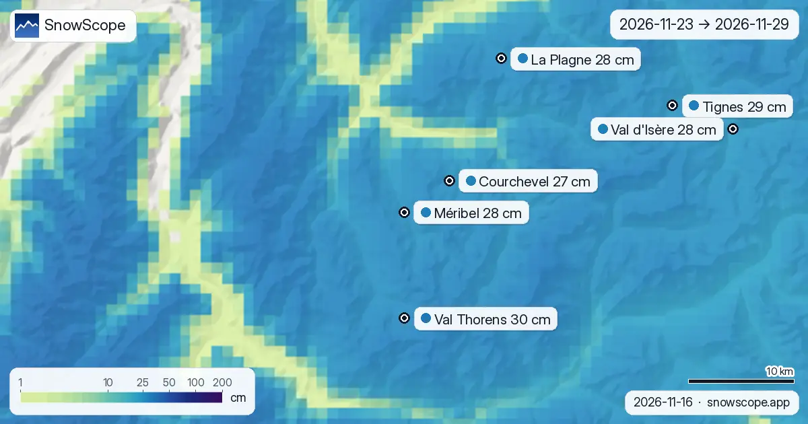

Méribel powder forecast next week (23–29 November 2026): 28 cm up top
After a big start this week (86 cm at the top from 17 to 20 November), Méribel lines up another round. Next week, 23 to 29 November, brings 28 cm up high in the middle of our forecast, anywhere from 13 to 44 cm, and 19 cm at the base.
See the live snow forecast for Méribel in the SnowScope appSnow depth, powder alerts and the 3D map, free.
Top, middle and base
Read from the top down: 28 cm near 2700 m, 26 cm near 2000 m, 19 cm near 1200 m. The low-to-high spread is 13–44 cm at the top and 4–34 cm at the base.
Most of the total arrives on Wednesday 25 (9 cm, up to 9), Thursday 26 (8 cm, up to 13) and Sunday 29 (6 cm, up to 10), counted at the top as the middle of our forecast and the high case.

What 17–20 November leaves behind
Before next week even starts, Méribel should be holding a deep fresh layer up high: 86 cm from Tuesday 17 to Friday 20 November (63–108 cm), while the base sees 6 cm. The second storm then builds on it.
Village level: white or wet?
The gap between 28 cm at the top and 19 cm at around 1200 m points to a snow line somewhere on the lower slopes: dry snow up high, wet snow lower down, perhaps rain at times in the village.
Méribel sits in the middle of the Three Valleys, so it can borrow snow from Val Thorens or Courchevel on a thin day.
When and where to ski Méribel
If you can pick one day, take the one that follows Wednesday 25 November, when 9 cm (up to 9 cm) has landed on the upper mountain.
The snow lies best on Mont Vallon and the Saulire ridge. For the softest turns, look to Mont Vallon's north-facing slopes above Mottaret. Lower down, the village end of the valley and the lower runs towards Brides will be the first to suffer if the air turns mild.
Next door, the same week
For comparison, the upper slopes of the closest big resorts collect Courchevel (5 km away) 27 cm, Val Thorens (10 km away) 30 cm and La Plagne (17 km away) 28 cm; Méribel sits at 28 cm.
The differences are small: the storm covers this whole corner of the Alps evenly, so pick on terrain and lifts, not on the snow total.
The range, not just the number
The range is wide: 13 cm in the low case, 44 cm in the high one. That is normal a week ahead. The timing is more reliable than the total.
We will refresh these numbers every day; the resort page carries the latest version.
Tips for skiers
- Fresh snow on a young snowpack: read the French avalanche bulletin (BERA) for the massif before any off-piste plan.
- Check the resort's own opening date and lift status: snow on the mountain does not mean lifts are running.
- Watch the forecast midweek: the top's range is 13–44 cm.
More maps (external sites)
About these numbers
Snow numbers: our two-week snow forecast issued on 16 November 2026, read at three heights of the resort (top, mid-mountain, base). Each total is the middle of a range, with a low and a high case. These are estimates for the slopes, not resort measurements, and forecasts move from day to day: check the live map before you go.
Cite this report
For research, teaching or the press: the numbers and charts are free to reuse under CC BY 4.0 with this citation.
SnowScope (2026), Méribel powder forecast next week (23–29 November 2026): 28 cm up top, https://snowscope.app/blog/en/2026/11/meribel-powder-forecast-next-week-23-29-november-2026.html, accessed 2026-11-16
SnowScope (Atlas Labs). (2026, November 16). Méribel powder forecast next week (23–29 November 2026): 28 cm up top. SnowScope snow reports. https://snowscope.app/blog/en/2026/11/meribel-powder-forecast-next-week-23-29-november-2026.html
BibTeX
@misc{snowscope2026meribelpowderforecastnex,
author = {{SnowScope (Atlas Labs)}},
title = {Méribel powder forecast next week (23–29 November 2026): 28 cm up top},
year = {2026},
month = nov,
howpublished = {\url{https://snowscope.app/blog/en/2026/11/meribel-powder-forecast-next-week-23-29-november-2026.html}},
note = {Published 2026-11-16 11:20 UTC; accessed 2026-11-16}
}· CC BY 4.0 · Methods, data and tools →
Méribel: snow and temperature by height, this winter vs last (tools) →
Follow Méribel
Free: a message when fresh snow is coming, and the forecast every morning.
More snow reports

Plan your December 2026 trip to Les Orres by matching weekly pass prices with our snow history of 46 past winters.

Les Karellis offers 45 km of runs and a 6-day adult pass for 191.00 EUR with a 98 % chance of snow mid-mountain in late December.

Grimentz-Zinal offers 71 km of runs and reliable high-altitude snow for your December trip, with 6-day passes at CHF 339.00.